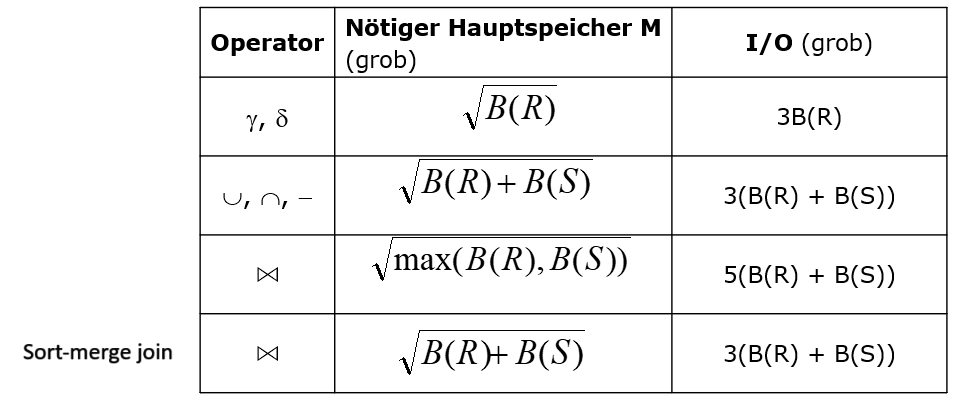

4. Anfrageausführung#
Zoom in die interne Ebene: Die 5-Schichten Architektur
{kind=link}
In den vorherigen Kapiteln haben wir die Anfragesprache bereits kennengelernt. Wir wissen jetzt, wie man Anfragen formulieren kann, wie Daten auf der Festplatte gespeichert werden und wie man den Zugriff auf die Daten mit Indizes beschleunigt.
Jetzt ist die Frage: Wie kommt man von der Anfrage bis zur Ausführung?
Zunächst haben wir eine SQL-Anfrage. Diese wird geparsed und daraus entsteht ein Parsebaum der prüft, ob diese Anfrage korrekt ist. Der Parsebaum wird dann in einen logischen Anfrageplan umgewandelt, der durch die Abschätzung der Kardinalitäten zeigt, wie eine logische Ausführung aussehen würde. Man versucht so die Operationen und ihre Reihenfolge auf logischer Ebene zu optimieren. Dann werden physische Pläne entworfen und man schaut, welche konkreten Implementierungen für einen bestimmten Operator Sinn machen würden. Für jeden Operator gibt es verschiedene Implementierungen, den Join Operator kann man beispielsweise als Loop Join oder auch Hash Join implementieren. Im nächsten Schritt werden die Pläne noch einmal begutachtet und die Kosten ein weiteres Mal geschätzt, damit der beste Plan ausgewählt werden kann. Führt man diesen dann aus, gibt es ein Anfrageergebnis zurück. Da man die Kardinalitäten nur abschätzt, hat man nicht die genauen Zahlen. Bei der Ausführung der Anfrage sieht man dann, wie lange diese tatsächlich braucht, ob sie vielleicht länger gebraucht hat, als erwartet, oder ob die Ausgabemenge sogar viel größer ist als geschätzt.
Ablauf der Anfragebearbeitung
{kind=link}
Mit diesem Kapitel befinden wir uns in der Anfrageausführung und schauen uns konkret an, wie Operatoren umgesetzt werden.

4.1. Physische Operatoren#
Anfragepläne bestehen aus Operatoren. Bevor wir Kosten schätzen können müssen wir diese Operatoren kennen. Wir kennen bereits die Operatoren der Relationalen Algebra, welche auf physische Operatoren abgebildet werden.
Was jetzt als neuer Operator dazu kommt, ist die Art und Weise, wie man eine Tabelle scannt.
Für jeden logischen Operator hat man mindestens einen physischen Operator der diesen implementiert.
Später können noch Varianten von logischen Operatoren hinzukommen. Ein Join lässt sich beispielsweise unterschiedlich ausführen.
4.1.1. Tabellen Scannen#
Eine Tabelle zu scannen ist die einfachste Operation. Dabei wird die gesamte Relation eingelesen, was man unter anderem für Joins und Unions braucht. Den Scan kann man ggf. auch anpassen, indem man diesen mit Selektionsbedingungen kombiniert, um zum Beispiel nur die Blöcke zu suchen, die einen bestimmten Wert enthalten.
Es gibt zwei Scan Varianten, den Table-scan und den Index-scan.
Beim Table-scan, werden alle Blöcke eingelesen, die in einer (bekannten) Region der Festplatte liegen. Dies bietet sich an, wenn man alle Operationen lesen will und die Tupelreihenfolge keine Rolle spielt.
Beim Index-scan gibt es einen Index, der angibt, welche Blöcke zur Relation gehören und wo diese liegen. Hat man eine Selektionsbedingung bietet sich der Index-scan hier am ehesten an, da wir direkt zu den bestimmten Werten springen können. Dieser steht außerdem stellvertretend für u.a. den B-Baum Index und den Hash Index.
4.1.2. Sortiertes Einlesen#
Eine weitere besondere Variante des Scans ist der Sort-scan - das sortierte Einlesen. Dies ist nützlich, wenn man in der Anfrage mit Order By sortiert oder wenn man bestimmte Operation, wie zum Beispiel Bereichsanfragen, ausführen will. Dann kann man mit Sort-scan, basierend auf einem gegeben Sortierschüssel, welcher aus einem oder mehreren Attributen und einer Sortierreihenfolge besteht, die Relation sortiert zurückgeben.
Es gibt unterschiedliche Implementierungsvarianten. Man kann zum Beispiel einen B-Baum haben der einen Sortierschlüssel als Suchschlüssel hat oder eine sequentielle Datei, die nach einem Sortierschlüssel sortiert ist. Ist die Relation klein kann diese im Hauptspeicher sortiert werden. Dann nutzt man entweder den Table-scan oder den Index-scan plus eine Sortierung. Ist die Relation hingegen sehr groß, muss man den TPMMS durchführen. Damit ist die Ausgabe nicht auf der Festplatte sondern als Iterator im Ausführungsplan.
4.1.3. Berechnungsmodell#
Bei der Ermittlung der Kosten eines Operators werden nur die I/O-Kosten berechnet, da diese die CPU-Kosten dominieren. Nehmen wir an, der Input eines Operators wird von der Disk gelesen, während der Output nicht auf die Disk geschrieben werden muss. Handelt es sich bei dem Operator um den letzten im Baum, verarbeitet die Anwendung die Tupel einzeln. Die I/O-Kosten hängen in diesem Fall von der Anfrage ab, nicht vom Plan. Handelt es sich aber um einen inneren Operator, kann man Pipelining durchführen, d.h. ein Tupel wird gelesen, zum nächsten Operator gegeben und immer so weiter. Damit hat man immer dieselben I/O-Kosten verbraucht, da das Tupel wie am Fließband von Operator zu Operator gereicht wird.
4.1.4. Kostenparameter / Statistiken#
Der verfügbare Hauptspeicher für einen Operator beträgt M Einheiten. Eine Einheit ist eine Blockgröße die wir auf der Festplatte haben. Den Hauptspeicherverbrauch messen wir nur für den Input der Operatoren, nicht für den Output. Wie viel Hauptspeicher man braucht, kann man dynamisch während der Anfragebearbeitung bestimmen. Wir gehen davon aus, dass M eine Schätzung ist und die Kosten, die wir schätzen können, nie genau sind. Der gewählte Plan, den wir als besten Plan ausgeben, ist nicht unbedingt auch der beste Plan. Basierend auf den Schätzungen ist es der Beste, dieser kann aber auch suboptimal sein.
B ist die Anzahl der Blöcke, B® ist die Anzahl aller Blöcke der Relation. Wir nehmen sogar an, dass B® die Anzahl der tatsächlich belegten Blöcke ist.
T ist die Anzahl der Tupel, T® ist die Anzahl der Tupel einer Relation. Mit T/B können wir die ungefähre Anzahl der Tupel pro Block berechnen.
V ist die Anzahl unterschiedlicher Werte (DISTINCT values) , d.h. die Kardinalität jeder Spalte. V(R,a) ist die Anzahl unterschiedlicher Werte einer Relation R im Attribut a.
\(V(R, [a1,a2,…,an]) = |\delta(\pi_{a1,a2,…,an}(R))|\) –> Betrag der Duplikatentfernung = Anzahl unterschiedlicher Werte
Scan-Kosten Beispiele
Nun gibt es zusätzlich noch zu berücksichtigen, ob eine Relation geclustered ist oder nicht. Ist R clustered gespeichert, liegen alle relevanten Tupel nebeneinander. Bei einem Table-scan werden alle Blöcke gelesen, also betragen die Kosten B®. Wenn sortiert werden soll und R in den Hauptspeicher passt, betragen die Kosten für einen Sort-scan B. Passt R nicht, müssen wir TPMMS anwenden und die Kosten betragen dann 3B.
Ist R nicht geclustered, also die Blöcke nicht nebeneinanderliegend, sondern gemischt mit Tupeln anderer Relationen, betragen die Kosten für einen Table-scan im schlimmsten Fall T®. Soll wieder sortiert werden, und R passt in den Hauptspeicher, liegen die Kosten für einen Sort-scan bei T. Passt R aber nicht und wir müssen wieder TPMMS anwenden, betragen die Kosten T+2B.
Die Kosten für einen Index-scan sind B oder T. Ist der Index selbst einige Blöcke groß, handelt es sich meistens um kleinere Zahlen. Bei einem Baum beispielsweise rechnet man plus die Höhe, denn je nach dem was schon im Hauptspeicher liegt, ob es die Wurzel ist oder mehrere Ebenen, hat man mehr I/O-Operationen.
4.1.5. Iteratoren#
Viele physische Operatoren werden als Iterator implementiert. Für jede Operation haben wir drei bestimmte Grundfunktionen: Open(), GetNext() und Close().
Die Open-Funktion initialisiert Datenstrukturen und öffnet einen Iterator für eine Operation. Diese kann zum Beispiel ein Scan sein oder auch ein Join und diese Operation ruft dann die Open-Funktionen für alle anderen Operationen auf, die im Baum darunter liegen. Auf jeder Ebene des Baumes wird Open() aufgerufen. Die Funktion holt aber noch keine Tupel nach oben.
Mit der GetNext-Funktion holt man das nächste Tupel. Wendet man die Funktion auf den obersten Iterator an, ruft dieser wiederrum GetNext() für die Iteratoren darunter auf und geht dabei so tief wie nötig. Ist kein Tupel mehr vorhanden bekommt man ein NotFound zurück.
Close() beendet und schließt den Iterator und ruft Close() auch für die anderen Iteratoren auf.
Pull-basierte Anfrageauswertung
In dem Beispiel lässt sich gut erkennen, wie Open() und GetNext() funktionieren. Wird hier in dem obersten Iterator Open() aufgerufen, wird auch in allen darunterliegenden Iteratoren Open() aufgerufen. R1-R4 symbolisieren die Scan Operationen. Mit GetNext() geht man die Iteratoren durch, bis ganz nach unten und holt dann das Ergebnis nach oben.

Iterator – Beispiel
In diesem Iterator Beispiel sieht man unten die beiden Relationen StarsIn und MovieStar. Aus der Relation MovieStar werden mithilfe, einer Selektion und einer Projektion alle Namen der Filmstars die 1960 geboren wurden herausprojiziert. StarsIn und MovieStar werden dann gejoint und um die Titel der Filme zu bekommen, in denen nur Schauspieler gespielt haben, die 1960 geboren wurden.

Pipelining vs. Pipeline-Breaker
Wir sehen hier die Relationen R, S und T. Die schwarzen Punkte sind die Tupel, die sich nach oben bewegen. Es gibt die Möglichkeit, Operatoren zu pipelinen. Das bedeutet, dass wir mit GetNext() jedes Tupel direkt aus der untersten Schicht holen können (obere Abb.). Wenn aber irgendwo ein GetNext() in einem Open() enthalten ist, gibt es einen Blocker, in dem zunächst alle Tupel gesammelt werden. Dann spricht man von einem Pipeline-Breaker (untere Abb.).

Pipelining versus Blocking
Pipelining ist im allgemeinen sehr vorteilhaft. Es müssen keine Zwischenergebnisse gespeichert werden und Operationen können auf Threads und CPUs verteilt werden. Wenn aber die gesamte Relation gelesen werden muss, braucht man Pipeline-Breaker. Sortiert man beispielsweise, muss man die gesamte Relation gesehen haben, andernfalls kann next() nicht ausgeführt werden. Das ist vor allem auch wichtig, wenn man gruppieren und aggregieren möchte. Ist die Relation sortiert oder gehashed kann next() diese dann aggregieren.
Union und Projektionen mit Duplikateliminierung scheinen auf den ersten Blick wie Pipeline-Breaker zu sein, da man alle Tupel miteinander vergleichen muss. Das ist aber nicht zwingend der Fall, denn die beiden Operatoren können die Tupel die sie bekommen in der GetNext-Funktion vermerken. Beim nächsten Aufruf kann dann geprüft werden, ob dieses Tupel schon einmal gesehen wurde. Eine Sortierung ist hierfür nicht notwendig, da next() die Ergebnisse schon früh weiterreichen kann. Die effizienteste Methode ist dies nicht, da man für das merken der Tupel einen großen Zwischenspeicher braucht. Aber: Einen Zwichenspeicher braucht man nur manchmal, in den anderen Fällen muss man die Operationen blocken (Blocking).
Iterator – Beispiel

Überblick über das Weitere
Es gibt drei Klassen von Algorithmen: Sort-basierte, Hash-basierte und Index-basierte Algorithmen. Diese sind entweder One-Pass Algorithmen, Two-Pass Algorithmen oder Multipass Algorithmen und haben somit drei Schwierigkeitsgrade die sich darin unterscheiden, wie oft über die Daten gelesen wird.
Die einfachsten Operatoren erfordern, dass nur einmal über die Daten gelesen wird. Das ist meist bei einem Scan der Fall, deshalb würde man hier einen One-Pass Algorithmus verwenden. Hier passt mindestens ein Argument in den Hauptspeicher, Selektion und Projektion ausgenommen.
Two-Pass Algorithmen, wie zum Beispiel TPMMS, finden meist Anwendung, wenn es eine Größenbeschränkung für den Input gibt. Hierbei wir meist erst einmal gelesen, dann wird zwischengespeichert und dieses Zwischenergebnis wird dann noch einmal gelesen.
Hat man zu wenig Speicherplatz für den Two-Pass Algorithmus kann man den Multipass Algorithmus verwenden. Dieser ist eine rekursive Erweiterung des Two-Pass Algorithmus und unbeschränkt in der Inputgröße, dafür aber unter anderem abhängig vom Operator.
4.2. One-Pass Algorithmen#
4.2.1. Operatorklassen für One-pass Verfahren#
Wir gehen immer davon aus, dass die Operationen und der Input in den Speicher passt.
Hat man Tupel-basierte unäre Operatoren braucht man nur einen sehr kleinen Teil des Inputs gleichzeitig im Hauptspeicher. Meist wenn Projektionen, Selektionen oder Multimengen-Vereinigungen durchführt.
Relationen-basierte unäre Operatoren benötigen meist die gesamte Relation gleichzeitig im Hauptspeicher. Deshalb darf die Inputgröße die Hauptspeichergröße nicht überschreiten. Dies ist der Fall bei Gruppierungen, Duplikateliminierungen und Sortierungen.
Relationen-basierte binäre Operatoren benötigen mindestens eine gesamte Relation im Hauptspeicher. Außerdem braucht man dann noch ein wenig Speicher für ein Element aus einer anderen Relation. Das gilt für alle Mengenoperationen außer Multimengen-Vereinigungen, aber vor allem für den Join.
4.2.2. Tupel-basierte unäre Operatoren#
Für Selektionen und Projektionen verwendet man Tupel-basierte unäre Operatoren, denn diese sind unabhängig von der Hauptspeichergröße. Die Speicherkosten betragen nur eine Einheit, da man immer nur ein Tupel auf einmal liest. Die I/O-Kosten hängen wie beim Table-scan oder Index-scan davon ab, ob R geclustered ist oder nicht. Ist R geclustered, betragen die Kosten B, ist R nicht geclustered betragen die Kosten T. Falls es einen Suchschlüssel im Index gibt, sind die Kosten noch geringer.

4.2.3. Relationen-basierte unäre Operatoren#
Relationen-basierte unäre Operatoren verwendet man bei Duplikateliminierungen und Gruppierungen. Hier ist zu beachten, dass die ganze Relation in den Hauptspeicher passen muss. Um dies zu bewältigen und um den Hauptspeicher ein wenig zu entlasten, ist es sinnvoll, nur die “Repräsentanten” zu speichern. Für die Duplikateliminierung bedeutet das, nicht alle Attribute eines Tupels zu speichern, sondern nur die, die die Tupel voneinander unterscheiden. Bei der Gruppierung würde man nur Gruppierungsattribute und aggregierte Teilergebnisse speichern und nicht das gesamte Tupel. Mit diesem “Trick” können dann auch größere Relationen verarbeitet werden.
4.2.4. Duplikateliminierung#
Bei der Duplikateliminierung wird Tupel für Tupel eingelesen. Wurde das Tupel zuvor noch nicht gesehen, wird es einfach ausgegeben, andernfalls passiert nichts. Der Puffer merkt sich, welche Tupel schon einmal gesehen wurden. Da man Tupel sofort finden möchte, sollte man sich eine geeignete Datenstruktur überlegen. Hier bieten sich am besten Hashtabellen oder balancierte Binärbäume an. Bei der Wahl von M, also wie groß der Speicher sein muss, rechnet man die Anzahl der duplizierten Tupel (alle DISTINCT Werte der Relation) geteilt durch die Anzahl der Tupel pro Block. Das Ergebnis muss dann kleiner sein als M, damit man die Duplikateliminierung mit einem One-Pass Algorithmus durchführen kann.
Wahl von M: \(B(\delta(R)) = V(R, [A1, … ,An])\) / Tupel-pro-Block ≤ M

4.2.5. Gruppierung#
Bei der Gruppierung wird ein Eintrag pro Gruppe im Hauptspeicher, bzw. ein Eintrag pro Gruppierungswert erzeugt. Dazu nimmt man noch kumulierte Werte für aggregierte Attribute, wie zum Beispiel MIN/MAX, COUNT oder SUM. AVG ist etwas schwieriger, da sich der Wert ändern kann. Hierfür muss man sich zusätzlich noch COUNT und SUM merken, damit man dann am Ende AVG berechnen kann.
Der Output ist ein Tupel pro Eintrag und wird erst nach dem letzten Input ausgegeben, denn erst dann kann man sicher sein, dass jede Gruppe vollständig betrachtet wurde.
Da die Einträge selbst größer oder kleiner als das Tupel sein können, sind die Hauptspeicherkosten schwer abzuschätzen. Die Anzahl der Einträge ist aber höchstens so groß wie T. Meistens wird sogar weniger Speicher verwendet, als man Blöcke hat.
4.2.6. Relationen-basierte binäre Operatoren#
Zu den Relationen-basierte binäre Operatoren gehören alle mengenbasierten Operatoren sowie Join und das Kreuzprodukt. Bei den mengenbasierten Operationen müssen wir die Multimengenvereinigung ausschließen. Hier ist anzumerken, das Multimengensemantik immer mit einem B (“Bag”) abgekürzt ist und Mengensemantik mit einem S (“Set”).
Es wird angenommen, dass immer eine Relation in den Hauptspeicher passt. Je nachdem, welche Operation man durchführen möchte, muss hier wieder eine sinnvolle Datenstruktur gewählt werden. Sollte nur eine Relation in den Hauptspeicher passen, nimmt man hier die kleinere. Wir gehen davon aus, dass B(S) kleiner als B® ist und die Kosten somit ungefähr B(S) + 1 betragen. Deshalb würde man hier B(S) wählen.
4.2.6.1. Vereinigung#
Führt man die Vereinigung von R und S in Multimengensemantik durch ( R \(\cup_{B}\) S ), ist das Tupel-basiert möglich. Die I/O-Kosten betragen B® + B(S), da beide Relationen gelesen werden müssen, und der Hauptspeicherbedarf beträgt genau 1.
Bei der Vereinigung von R und S in der Mengensemantik ( R \(\cap_{S}\) S ) werden erst alle Tupel aus S eingelesen. Über diese Tupel wird dann eine Datenstruktur aufgebaut (Schlüssel ist ein gesamtes Tupel). Diese eingelesenen Tupel werden dann alle ausgegeben und als nächstes wird R eingelesen. Bei jedem Tupel, dass es auch in S gibt, wird nichts gemacht, die anderen werden auch ausgegeben.
4.2.6.2. Schnittmenge#
Nimmt man die Schnittmenge von R und S ( R \(\cap_{S}\) S ), ist der Ablauf ähnlich wie bei der Vereinigung in Mengensemantik. Nach dem Einlesen von S gibt man aber noch keine Tupel aus, da man noch nicht weiß, ob diese in der Schnittmenge enthalten sind. Liest man dann R ein, werden die Tupel, die auch in S vorkommen, ausgegeben, für die anderen wird nichts getan. Voraussetzung für die Schnittmenge ist, dass R und S Mengen sind.
Bei der Schnittmenge von R und S in der Multimengensemantik ( R \(\cap_{B}\) S ) wird S eingelesen und für jedes Tupel ein COUNT-Wert gespeichert, damit man sehen kann, wie oft ein Tupel gelesen wurde. Dann wird R eingelesen. Kommt ein Tupel aus R in S vor und der COUNT-Wert ist größer als Null, wird dieses Tupel ausgegeben und der COUNT-Wert um eins reduziert. In allen anderen Fällen wird nichts getan.
4.2.6.3. Mengen-Differenz#
Die Mengen-Differenz ist nicht kommutativ, deshalb ist es wichtig, dass man die Relation, von der man etwas abziehen möchte, zuerst nimmt. Auch hier ist wieder vorausgesetzt, dass R und S Mengen sind. Für die beiden folgenden Beispiele angenommen, dass S kleiner als R ist.
Im ersten Schritt wird immer die kleinere Relation, hier S, in eine effiziente Datenstruktur eingelesen. Der Schlüssel ist ein gesamtes Tupel.
Nimmt man R \(-_{S}\) S, liest man R ein und gibt jedes nicht in S vorkommende Tupel aus. Die anderen Tupel werden ignoriert.
Nimmt man S \(-_{S}\) R, liest man R ein und löscht alle auch in S vorkommenden Tupel aus der Datenstruktur. Kommt ein Tupel nicht in S vor, wird nichts getan. Alle übrigen Tupel werden einfach ausgegeben.
4.2.6.4. Multimengen-Differenz#
Auch die Multimengendifferenz ist nicht kommutativ und auch hier ist es wichtig, die Relation, von der man etwas abziehen möchte, zuerst zu nehmen.
Nimmt man S \(-_{B}\) R in der Multimengensemantik, liest man auch hier zuerst S ein und speichert wieder für jedes Tupel einen COUNT-Wert. Dann wird wieder R eingelesen und geschaut, ob es in der Relation Tupel gibt die auch in S vorkommen. Falls ja, wird der COUNT-Wert verringert, falls nein, wird nichts getan. Die Tupel werden dem COUNT-Wert entsprechend oft ausgegeben.
Bei R \(-_{B}\) S wird für jedes Tupel in S ein COUNT-Wert c gespeichert, welcher c Gründe liefert, ein Tupel aus R nicht auszugeben. Wird dann R eingelesen und ein Tupel ist bereits vorhanden und COUNT ist größer als Null, wird COUNT verringert. Ist COUNT gleich Null oder das Tupel noch nicht vorhanden, wird es ausgegeben.
4.2.6.5. Kreuzprodukt#
Bei dem Kreuzprodukt von R und S (R x S) wird S wieder zuerst in den Hauptspeicher eingelesen, hierbei ist die Datenstruktur egal. Wird dann R eingelesen, konkatenieren wir mit jedem Tupel aus S und geben das Ergebnis aus. Die Rechenzeit pro Tupel ist sehr lang und die Ausgabe dementsprechend groß.
4.2.6.6. Natural Join#
Beim Natural Join R(X,Y) ⋈ S(Y,Z) wird zuerst S in den Hauptspeicher eingelesen. Y ist hier unser Suchschlüssel - das Join Attribut. Dann wird R eingelesen und man sucht für jedes Tupel der Relation ein passendes Tupel aus S und gibt es aus. Die I/O-Kosten betragen B(S) + B®. Es wird angenommen, dass B(S) <= M-1 bzw. <= M ist.
Equi-join und Theta-join funktionieren analog.
4.3. Nested Loop Join#
Zuvor haben wir uns mit Algorithmen und Operatoren beschäftigt, bei denen es ausgereicht hat, eine Relation nur einmal einzulesen, da diese als Ganzes in den Hauptspeicher passte. Nun schauen wir uns Algorithmen an, bei denen nicht mehr davon ausgegangen werden kann, dass der Hauptspeicher ausreichend groß ist.
Der Nested-Loop-Join-Algorithmus ist ein operationsabhängiges Verfahren und ein 1.5-Pass Algorithmus. Die Idee ist, dass eine Relation nur einmal eingelesen wird und die andere Relation mehrfach. Dabei kann die Größe der beiden Relationen beliebig sein.
Man könnte hier eine Tupel-basierte, naive Variante des Algorithmus durchführen. Dafür holt man sich jeweils ein Tupel aus der Relation S und ein Tupel aus der Relation R und prüft, ob man diese verjoinen kann. Falls ja, wird das Ergebnis ausgegeben.
FOR EACH TUPLE s IN S DO
FOR EACH TUPLE r IN R DO
IF (r.Y = s.Y) THEN OUTPUT (r ⋈ s)
Die I/O-Kosten sind T(S) + T(S) · T®, denn man muss jedes Tupel aus S herausfinden und dann für jedes dieser Tupel R-mal alle Tupel aus R lesen. Das lässt sich optimieren, indem man zum Beispiel einen Index für das Joinattribut in R hat oder die Tupel auf Blöcke verteilt.
4.3.1. Block-basierter NLJ#
Beim Block-basierten Nested Loop Join werden die Tupel nach Blöcken organisiert, was besondern sinnvoll für die innere Schleife ist. Wir versuchen den Hauptspeicher so gut es geht zu nutzen, indem wir ein R-Tupel nicht nur mit einem, sondern mit vielen S-Tupeln verjoinen. Idealerweise ist die äußere Schleife für die kleinere Relation (hier S), damit weniger Vergleiche gemacht werden müssen. Dennoch ist dies schwieriger als im One-Pass, da B(S) größer als M ist. Aus dem Grund brauchen wir auch hier eine effiziente Datenstruktur für S im Hauptspeicher.
Im folgenden Codebeispiel sehen wir, wie so ein Block-basierter Nested Loop Join aussieht. Wir holen uns einen chunk von Blöcken aus S und lesen die Blöcke in den Hauptspeicher. Dann organisieren wir die Tupel in effiziente Datenstrukturen, sodass wir die Join Attribute besser als Schlüssel darstellen können. In der nächsten Schleife holen wir dann jeweils einen Block aus R und lesen für jeden Block die Tupel aus. Es werden drei Schleifen benötigt. Die ersten beiden sind für das blockweise Vorgehen zuständig und die Dritte wird gebraucht, weil im Block selber die Tupel im Hauptspeicher noch einmal gelesen werden müssen.
FOR EACH chunk of M-1 blocks of S DO BEGIN
read blocks into main memory;
organize tuples into efficient data structure;
FOR EACH block b of R DO BEGIN
read b into main memory;
FOR EACH tuple t of b DO BEGIN
find tuples of S in main memory that join;
output those joined tuples;
END;
END;
END;
Block-basierter NLJ – Kosten
Sagen wir, wir haben eine Relation R mit 1000 Blöcken (B® = 1000), eine Relation S mit 500 Blöcken (B(S) = 500) und 101 Einheiten Platz im Hauptspeicher (M = 101). Damit können wir im Hauptspeicher jeweils 100 Blöcke abbilden und jeweils einen Block für R merken, vorausgesetzt es werden keine weiteren Einheiten benötigt. Nun muss die äußere Schleife fünf Mal durchlaufen werden (5 · 100 I/O-Operationen = 500). Dazu kommen jeweils 1000 I/O-Operationen für R, womit wir auf insgesamt 5.500 I/O-Operationen kommen.
Wäre R jetzt in der äußeren Schleife, würde diese Relation zuerst gelesen werden und die Schleife müsste 10 Mal durchlaufen werden (10 · 100 I/O-Operationen = 1000). Dazu würden wieder pro Schleifendurchlauf jeweils 500 I/O-Operationen für S hinzukommen und ein Ergebnis von 6000 I/O-Operationen liefern. Wie man sieht, ist es also sinnvoller wenn die kleinere Relation außen ist.
In einem weiteren Beispiel haben wir B(S) = 100 und B® = 1.000.000. Ist die Relation R außen, muss die Schleife 10.000 Mal laufen und bei jedem Durchlauf kommen 100 I/O-Operationen für S hinzu, sodass man am Ende 2.000.000 I/O-Operationen hat. Ist S in diesem Szenario außen, muss die Schleife nur einmal durchlaufen werden und man hat am Ende 1.000.100 I/O-Operationen. Also auch hier wieder deutlich, dass es sinnvoller ist, die kleinere Relation außen zu haben.
Im folgenden einmal eine allgemeinere Berechnung. Mit der äußeren Schleife werden so viele Blöcke gelesen, wie in den Hauptspeicher passen. Also wird hierfür die Anzahl der Blöcke von S durch den Platz im Hauptspeicher geteilt. Das wird multipliziert mit M-1 Blöcken von S, addiert mit der Anzahl der Blöcke von R, für die innere Schleife. Das Ergebnis ist nur eine Abschätzung. Die Formel sieht wie folgt aus:
\(\frac{B(S)}{M-1}(M-1+B(R)) = \frac{B(S)(M-1)}{M-1} - \frac{B(S)}{M-1} + \frac{B(S)B(R)}{M-1} \approx\frac {B(S)B(R)}{M}\)
4.3.2. Zusammenfassung bisheriger Algorithmen#
Hier einmal eine Übersicht darüber, wie viel Hauptspeicher die verschiedenen Operationen in den verschiedenen Varianten benötigen und wie viel I/O dabei verbraucht wird.
{kind=link}
4.4. Sort-basierte Two-Pass Algorithmen#
1-, 2-, Mehr-Phasen
Bisher: One-Pass Algorithmen; eine Relation passt in Hauptspeicher
Nun: Two-Pass Algorithmen; keine Relation passt in Hauptspeicher
Zwei Phasen
Einlesen der Daten
Verarbeitung der Daten (hier: Sortierung von Teillisten)
Schreiben der Daten
Wiedereinlesen der Daten (hier: Merging der Teillisten)
Hier unterscheiden sich die Algorithmen
Mehr-Phasen?
Zwei Phasen reichen meist
Verallgemeinerung zu Mehr-Phasen einfach
4.4.1. Duplikateliminierung#
Idee: Ähnlich wie TPMMS
Phase 1 wie bisher
Sortierschlüssel ist gesamtes Tupel
Phase 2: Ein Block pro sortierter Teilliste
Betrachte jeweils erstes Tupel
Suche kleinstes Tupel
Gib dieses Tupel aus; verwerfe alle anderen identischen Tupel
Beispiel
M = 3 + 1; 2 Tupel pro Block
17 Tupel: 2, 5, 2, 1, 2, 2, 4, 5, 4, 3, 4, 2, 1, 5, 2, 1, 3
Phase 1: 3 sortierte Teillisten
Phase 2: s.o.
Verbesserung schon in Phase 1?
Duplikateliminierung in Teillisten -> Kleinere Teillisten
Duplikateliminierung Kosten
Wie TPMMS
B® für Einlesen in Phase 1
B® für Schreiben der Teillisten
B® für Lesen der Teillisten
Zusammen: 3·B®
One-pass Algorithmus: 1·B®
Aber hier größerer Input möglich
One-pass: B ≤ M
Two-pass: B ≤ M²
4.4.2. Gruppierung und Aggregation#
Phase 1
Lese R ein (jeweils M Blöcke)
Sortiere M Blöcke nach Gruppierungsattribut(en)
Schreibe sortierte Teillisten
Phase 2
Lade jeweils einen Block jeder Teilliste
Suche kleinste Schlüssel (neue Gruppe)
Aggregiere alle Tupel mit diesem Schlüssel
Gegebenenfalls Blöcke nachladen
Gebe ein Tupel mit aggregierten Werten (und gegebenenfalls Gruppierungsattribut) aus.
Suche nächst kleineren Schlüssel
I/O-Kosten: 3B® Maximale Größe: B® ≤ M²
Verbesserung Phase 1: Aggregation schon auf Teillisten
„Pre-Aggregation“: Besonders wichtig für verteilte DBMS
4.4.3. Vereinigung (binär)#
Lese R ein und schreibe sortierte Teillisten
Sortierschlüssel ist gesamtes Tupel
Lese S ein und schreibe sortierte Teillisten
Sortierschlüssel ist gesamtes Tupel
Lese jeweils einen Block aus beiden Mengen sortierter Teillisten
Suche kleinste Tupel aus allen Blöcken
-> Ausgabe
Entfernung aus allen anderen Teillisten
Zur Not: Blöcke nachladen
Suche nächstes kleinstes Tupel
Funktioniert für Mengen und Multimengen
Bei Multimengen ist one-pass Algorithmus besser
I/O-Kosten: 3(B® + B(S))
Maximale Größe: B® + B(S) ≤ M²
4.4.4. Schnittmenge und Differenz#
Sortierung und Laden der Teillisten wie bei Vereinigung
Suche kleinstes Tupel t
Zählen
count(R, t) = Anzahl der Vorkommen von t in R
count(S, t) analog
Gegebenenfalls nachladen
Ausgabe je nach Operator
\(\cap_{S}\): Ausgabe von t falls count(R, t) > 0 und count(S, t)>0
\(\cap_{B}\)gebenenfalls nicht ausgeben (wenn ein count = 0)
\(R-_{S}S\): Ausgabe von t falls count(R, t) > 0 und count(S, t) = 0
\(R-_{B}S\): Ausgabe von t max[0, count(R, t) -count(S, t)] mal
Suche nächstes kleinstes Tupel t …
I/O-Kosten: 3(B® + B(S))
Maximale Größe: B® + B(S) ≤ M²
4.4.5. Einfacher, Sort-basierter Join Algorithmus#
Neues Problem bei Join: Alle Tupel mit gleichem Joinattributwert müssen gleichzeitig im Hauptspeicher sein.
Lösungsidee: Reserviere so viel Speicher wie möglich für aktuelle Jointupel
Reduziere Speicherbedarf anderer Algorithmusteile
R(X, Y) ⋈ S(Y, Z)
Phase 1: Sortiere R und S jeweils gemäß Y mit TPMMS
Inkl. letzter Phase (Schreiben des sortierten Ergebnisses)
Phase 2: Merge R und S
Jeweils ein Block
Suche insgesamt kleinstes Y in beiden Blocks
Falls nicht in anderem Block vorhanden: Entferne alle Tupel mit diesem Y
Falls vorhanden: Identifiziere alle Tupel mit diesem Y
– Gegebenenfalls nachladen
Gebe alle Kombinationen aus
Kosten
R: 1000 Blocks; S: 500 Blocks; M = 101
TPMMS: 4·B® + 4·B(S) = 4·1500 = 6000 I/O
Merging: Nochmals R und S lesen: 1500 I/O
Nur 2 Blocks werden benötigt
Aber: Alle Tupel mit einem bestimmten Y-Wert müssen in 98 Blöcke passen
I/O: 5(B® + B(S)) = 7500 I/O
Hauptspeicher: B®≤M² und B(S)≤M²
Vergleich zu nested loops: 5500 I/O
Aber nested loops ist quadratisch: B®B(S)/M
Sort-based join ist linear
Gleich noch Verbesserung auf 3(B® + B(S))
Erweiterung
Falls alle Tupel (beider Relationen) mit einem bestimmten Y-Wert nicht in Hauptspeicher passen
Falls alle solche Tupel einer Relation in M−1 Blöcke passen
One-pass join für diesen Y-Wert
Falls nicht: Nested loop join
Fallunterscheidung kann überflüssiges I/O vermeiden.
Diskussion
Y ist oft in einer Relation ein Schlüssel => leicht
Verbesserung des Sort-basierter Join Algorithmus
Idee: Kombiniere 2te Phase des TPMMS mit dem Joinen
=> („sort-join“, „merge-join“) „sort-merge-join“
Erzeuge sortierte Teillisten der Größe M jeweils für R und S mit Y als Sortierschlüssel
Lade erste Blöcke aller Teillisten (beider Relationen)
Suche kleinste Y-Werte und erzeuge Jointupel
Annahmen
Anzahl aller Teillisten (aus R und S) ≤ M
Tupel mit gemeinsamen Y-Werten passen zusammen in verbleibenden Hauptspeicher
R: 1000 Blocks; S: 500 Blocks; M = 101
Phase 1: 10 Teillisten für R, 5 Teillisten für S
Phase 2: 15 Blöcke gleichzeitig im Hauptspeicher
=> 86 freie Blöcke für aktuelle Join-Tupel
Zusammen 3(B® + B(S)) = 4500 I/O
Oft sind viele Speicherblöcke übrig, da B®+B(S) << M²
4.4.6. Zusammenfassung – sortbasierte, two-pass Algorithmen#
{kind=link}
4.5. Hash-basierte Two-Pass Algorithmen#
Input passt nicht in Hauptspeicher (wie immer).
Hashe alle Inputargumente.
Tupel, die gemeinsam betrachtet werden müssen, erhalten gleichen Hashwert.
Landen also in einem Bucket
Unäre Operatoren: Bearbeite anschließend einen Bucket nach dem anderen
Binäre Operatoren: Bearbeite anschließend Paare von Buckets
Oft: Mehr als ein Block pro Bucket
Allgemein: Reduktion des Speicherbedarfs um Faktor M im Vergleich zu Größe der Relationen
Verwende ≤M Buckets
Jeder einzelne Bucket muss in Hauptspeicher passen.
4.5.1. Partitionierung mittels Hashing#
Grundalgorithmus
Gegeben M Speicherblöcke, verteile R auf M−1 Buckets
Möglichst gleicher Größe
Ein Bucket pro Speicherblock
Letzter Speicherblock für Einlesen der Tupel aus R
Idee
Für jedes Tupel aus R berechne h(t) und bewege Tupel in entsprechenden Bucket.
Falls Block voll: Schreibe als Overflowblock auf Disk
Am Ende: Schreibe auch alle Buckets auf Disk
initialize M-1 buckets using M-1 empty buffers;
FOR each block b of R DO BEGIN
read block b into M-th buffer
FOR each tuple t in b DO BEGIN
IF buffer for bucket h(t) has no room for t THEN
BEGIN
copy the buffer to disk; /* spill */
initialize a new empty block in that buffer;
END;
copy t to buffer for bucket h(t);
END;
END;
FOR each bucket DO
IF the buffer for this bucket is not empty THEN
write the buffer to disk;
4.5.2. Duplikateliminierung \(\delta(R)\)#
Algorithmus wie eben:
Ganzes Tupel als Hash-Input (ist das nötig?)
Duplikate landen im gleichen Bucket.
Betrachte jeden Bucket einzeln.
Duplikateliminierung innerhalb des Buckets
Danach Bucket ausgeben
Annahme: Alle Blöcke eines Buckets passen in Hauptspeicher
=> One-pass Algorithmus funktioniert pro Bucket
Bei Gleichverteilung durch h: Bucket hat B®/(M−1) Blöcke
=> R darf bis zu M(M−1) viele Blöcke umfassen
Vermutlich noch besser (wie zuvor): Es müssen nur distinct Tupel in Hauptspeicher passen
I/O-Kosten: 3·B®
4.5.3. Gruppierung und Aggregation \(\gamma_{L}(R)\)#
Grundalgorithmus wie zuvor
Aber: Hashfunktion hängt nur von Gruppierungsattributen ab.
Problem oft: Nur wenig verschiedene Werte (z.B. Bundesland)
=> nur wenige (und damit große) Buckets
Dann: One-pass Algorithmus für Gruppierung auf jedem Bucket
Hauptspeicherbedarf: B® ≤ M²
Vermutlich viel geringer: Nur ein Tupel pro Gruppe/Bucket im Hauptspeicher
I/O-Kosten: 3·B®
4.5.4. Mengenoperationen#
Bei binären Operationen: Gleiche Hashfunktion für beide Inputs!
Mengenvereinigung:
Hashe R und S jeweils auf M−1 Buckets
Bilde Mengenvereinigung passender Bucketpaare
Wieder: Jeweils One-pass Algorithmus anwenden
Multimengenvereinigung: Voriger Algorithmus
Speicherbedarf: min(B®, B(S)) ≤ (M−1)²
Warum?
Da bei One-pass Varianten kleinere Relation in Hauptspeicher passen muss
I/O-Kosten: 3·(B® + B(S))
4.5.5. Hashjoin#
Algorithmus wie zuvor
Aber: Hashschlüssel sind Joinattribute
Tupel mit gleichen Joinattributwerten landen im korrespondierenden Bucket.
Danach One-pass Join Variante für jedes Bucket-Paar
Beispiel von zuvor: B® = 1000, B(S) = 500, M = 101
Hashing
Ca. 10 R-Blocks pro Bucket
Ca. 5 S-Blocks pro Bucket
Min(10, 5) = 5 => One-pass Algorithmus klappt (5 < 101)
Hole ersten S-Bucket in Hauptspeicher;
Joine Blöcke des passenden R-Buckets hinzu
Hole nächsten S-Bucket in Hauptspeicher … usw …
I/O-Kosten:
1500 für das Hashing + 1500 um Buckets zu schreiben
1500 um Buckets zu lesen
Zusammen: 3(B® + B(S)) = 4500 (wie sort-basierte Methode)
Aber es geht noch besser.
4.5.6. I/O Einsparungen#
Grundidee: Nutze nicht-verwendeten Speicher
Idee 1: Verwende mehr als 1 Speicherblock pro Bucket
Effizienteres Schreiben (aber gleiche I/O-Kosten)
Idee 2: Hybrid Hashjoin
Beim Hashen von S: Behalte m Buckets komplett im Speicher
Auch nach Ende des Hashens
Jeweils mit geeigneter Datenstruktur
Schon in der Hash-Phase von R: Join-Tupel in den m Buckets produzieren
Für alle anderen Buckets wie bisher: Join in zweiter Phase
4.5.7. I/O Einsparungen – Hybrid Hashjoin#
Beim Hashen von S: Behalte m Buckets komplett im Speicher.
Falls k Buckets insgesamt für S nötig sind: Verwende für die übrigen k – m Buckets jeweils nur einen Block im Hauptspeicher beim Hashen.
Es muss gelten: ( m · B(S)/k ) + 1 · (k – m) ≤ M
Wähle also m entsprechend
Schreibe die k – m Rest-Blöcke auf Disk.
Beim Hashen von R sind nun im Hauptspeicher:
m vollständige Buckets für S
je ein Block für die k–m Buckets von R, deren korrespondierende S-Buckets auf Disk sind
Falls Tupel t aus R in einen der m Buckets gehasht wird:
Joinpartner suchen
Gegebenenfalls direkte Ausgabe
Falls t in einen der k–m Buckets gehasht wird
Verfahre wie zuvor: Auf Disk schreiben
Phase 2 dann nur noch auf den k – m Buckets
4.5.8. Hybrid Hashjoin – Analyse#
Einsparungen
Spare 2 I/Os für jeden Block, der im Hauptspeicher gehalten werden kann (nämlich m/k aller Buckets)
Einsparung also 2(m/k) (B® + B(S))
=> Maximiere (m/k), gegeben ( m · B(S)/k ) + k – m ≤ M
Lösung: Wähle m = 1 und minimiere k.
Intuition: Alle Puffer bis auf k – m werden verwendet, um Tupel im Hauptspeicher zu halten; davon bitte möglichst viele.
Minimierung von k (gesamte Anzahl der Buckets): Wähle Bucketgröße so, dass ein Bucket gerade eben in Hauptspeicher passt.
Bucketgröße M
=> k = B(S) / M
=> nur ein Bucket passt in Hauptspeicher (=> m = 1)
Bucketgröße eigentlich etwas kleiner, damit die übrigen (wenigen) Buckets durch mindestens einen Block repräsentiert werden können
=> Einsparungen 2(m/k) (B® + B(S)) = 2 (1/ (B(S)/M) ) · (B® + B(S)) = (2M / B(S)) · (B® + B(S))
=> I/O-Kosten: (3 – (2M/B(S))) · (B® + B(S))
=> Wähle wenige große Buckets statt viele kleine
Hybrid Hashjoin – Beispiel
B® = 1000, B(S) = 500, M = 101
Wähle z.B. k = B(S) / M = 500 / 101 ≈ 5
=> Ein Bucket hat ca. 100 Blocks
=> 104 Hauptspeicher nötig (> 101)
+1 für Lesen der Relation
=> Besser k = 6
Je 1 Puffer für erste 5 Buckets +1 für Lesen der Relation und 95 Puffer für letzten Bucket
Erwartete Größe: 500/6 ≈ 83
Phase 1
I/O-Kosten für S: 500x lesen und 417x schreiben
I/O-Kosten für R: 1000x lesen und 833x schreiben (5 der 6 Buckets)
Phase 2
Alle geschriebenen Blöcke wieder lesen: 417 + 833 = 1250
Zusammen: 500 + 1000 + 2·(417 + 833) = 4000 I/Os
< 4500 bei einfachen Hash-Join bzw. Sort merge Join!
Warum nur von S (und nicht von R) abhängig?
4.5.9. Zusammenfassung Hash-basierter Verfahren#

Wdh.: Sort-basierte, two-pass Algorithmen
Vergleich Hash-basierte und Sort-basierte Algorithmen
Speicherbedarf und I/O-Kosten ähnlich
Speicherbedarf Hash-basierter Verfahren hängt nur vom kleineren der beiden Inputs statt Summe der beiden Inputs ab.
Sortier-basierte Verfahren produzieren oft einen sortierten Output
Vorteile später im Plan
Sortierbasierte Verfahren können sortierte Teilliste hintereinander auf Disk schreiben
Spart bei einer I/O-Operation Seektime
Bei großem M: Auch mehrere Blöcke einer Liste auf einmal lesen
Gleiches auch bei Hash-basierten Verfahren möglich, falls Anzahl Buckets kleiner als M
4.6. Index-basierte Algorithmen#
Indizes ermöglichen manchmal andere Algorithmen.
Insbesondere Selektion
Aber auch: Joins und andere binäre Operatoren
Clustered Relation
Tupel auf so wenig wie möglich Blöcken auf Disk
Clustering Index
Tupel mit gleichem Schlüsselwert sind auf so wenig wie möglich Blöcken
Eventuell +1 Block wegen Layout
Oft: Relation ist bereits clustered und clustering index ist auf dem Primärschlüssel
Eine clustered Relation kann auch non-Cluster-Indizes haben.
4.6.1. Index-basierte Selektion#
Basisalgorithmus: Lese gesamte Relation ein und prüfe Bedingung
Ohne Index ist dies die beste Methode
I/O-Kosten: B® bzw. T® falls R nicht clustered
Besser: Selektionsbedingung a=v und a ist Suchschlüssel eines Cluster-Indexes
I/O-Kosten: \(\lceil B(R)/V(R,a)\rceil\)
Reminder: V(R,L) = Anzahl distinct Werte von pL®
Eventuell mehr
I/O-Kosten für Index
Tupel nicht perfekt auf Blöcke verteilt: 1 Block extra
Blöcke nicht absolut vollgepackt
Fremde Tupel auf Blöcken
Aufrunden: a ist Schlüssel => V(R,a) = T® >> B®
Dennoch mindestens 1 Block
Selektionsbedingung a=v und a ist Suchschlüssel eines nicht-Cluster-Indexes
=> Jedes Tupel auf anderen Block (vermutlich)
I/O-Kosten: \(\lceil T(R) / V(R,a)\rceil\)
Wieder zusätzliche I/O-Kosten: Indizes
Etwas besser, falls zufällig mehr als ein Tupel auf dem Block
Index-basierte Selektion – Beispiel
Beispiel: B® = 1000, T® = 20000 (=> 20 Tupel pro Block)
Anfrage: sa=0®; Index auf a
R ist clustered; Index wird nicht verwendet:
1000 I/Os
R nicht clustered; Index wird nicht verwendet:
20000 I/Os
V(R,a)=100; Index ist clustering:
1000/100 = 10 I/Os
V(R,a) = 10; Index ist nicht clustering:
20000/10 = 2000 I/Os
Falls R clustered: Lieber ganz R einlesen (1000 I/O)
V(R,a) = 20000 (d.h. a ist Schlüssel):
1 I/O
4.6.2. Joining mit Index#
Natural Join: R(X,Y) ⋈ S(Y,Z)
Algorithmus
S habe Index auf Y.
Lese jeden Block in R.
Für jedes Tupel: Extrahiere Y-Wert und verwende Index um entsprechendes S-Tupel zu finden
Kosten
Falls R clustered: B®
Für jedes der T® Tupel muss man durchschnittlichT(S)/V(S,Y) Tupel lesen.
Falls Index nicht clustering ist: T® · T(S)/V(S,Y)
Falls Index clustering: T® · B(S)/V(S,Y) bzw. genauer: T® · max[ 1 , B(S) / V(S,Y)]
Dominiert Kosten B® bzw. T®
Joining mit Index – Beispiel
B® = 1000, B(S) = 500, T® = 10000, T(S) = 5000
10 Tupel pro Block
V(S,Y) = 100 (also 100 distinct Y-Werte in S)
R sei clustered; Index auf S[Y] sei clustering
I/O-Kosten:
1000 zum Lesen von R
10000 · 500/100 = 50000 I/Os zum Vergleich mit S
Diskussion
Klappt besser falls R sehr klein => Viele Blöcke von S werden nie angefasst
Bei Hash- und Sort-basierten Methoden werden hingegen immer ganz R und ganz S betrachtet
Joining mit sortiertem Index
Sortierter, dichtbesetzter Index, z.B. B-Baum
Idee 1: Sort-Merge-Join, aber nur eine Relation muss vorher sortiert werden.
Idee 2: Falls beide Relationen sortierten Index auf Y haben: Nur noch Merge-Phase
„Zig-Zag-Join“
Tupel aus R ohne Joinpartner in S werden nie gelesen (und umgekehrt)


Joining mit Indizes – Beispiel
B® = 1000, B(S) = 500, T® = 10000, T(S) = 5000, M = 100
Idee 1: Seien R und S clustered; S habe sortierten Index auf Y; R habe keinen Index
10 sortierte Teillisten für R: 2000 I/Os
Nun 11 Puffer: Einen für jede Teilliste, einen für Blöcke aus S
Ganz R und ganz S werden gelesen: 1500 I/Os
Zusammen 3500 I/O
Wieder weniger als bisher! Aber sortierter Index wird vorausgesetzt…
Idee 2: Nun habe R auch einen Index
Sortierung der Relationen ist unnötig: Zig-Zag-Join
Schlimmstenfalls nur ganz R und ganz S lesen: 1500 I/O
Bei wenigen Joinpartnern: Viel weniger I/Os
4.7. Zusammenfassung#
Physische Operatoren
One-Pass Algorithmen
Nested Loop Join
Sort-basierte Two-Pass Algorithmen
Hash-basierte Two-Pass Algorithmen
Index-basierte Algorithmen